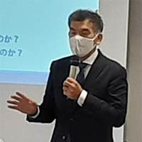

|  |
| 講師の原田禎夫さん |
12月20日（月）10時30分より、県内消費者団体地区別研修会②を開催し、会場（埼玉会館ラウンジ）16人・オンライン34人計50人が参加しました。
参加：11団体50人（埼玉県地域婦人会連合会、新日本婦人の会埼玉県本部、埼玉県生活協同組合連合会、生活協同組合コープみらい、パルシステム埼玉、埼玉消費者被害をなくす会、さいたま市消費者団体連絡会、上尾市消費者被害防止サポーターの会、行田市くらしの会、伊奈町くらしの会、埼玉県消費者団体連絡会、一般）
講師：原田禎夫さん 大阪商業大学公共学部准教授
講師の原田禎夫さんから、プラスチック汚染の現状についてお話しいただき、さらに日本から海外への廃プラスチック輸出や焼却処分に依存した日本の廃棄物処理の実態など説明いただきました。次に、原田さんの地元でのごみマップ調査や分析、保津川の清掃活動、さらには亀岡市レジ袋禁止条例につなげたことなどお話しいただき、それらのことがレジ袋激減、マイバッグ・マイ容器の広がりや事業者による実践、小学校での給水機設置など、さまざまな取り組みの広がりにつながっていること、最後にプラスチック汚染を解決できる単一の手法はない、政府による規制の実現には多くの時間と費用を要する、国家・地方・地域・企業・個人の各レベルでの効果的取り組みが不可欠であり、地域レベルから国際的レベルまで価値の共有が必要だと締めくくられました。